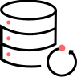

Sizes · floor 48px
48 · 64 · 96 — never below 48
Two colors

ink = structure
coral = the subject
Never a third color
Geometry
96 grid · 3px stroke
round cap/join · 2px margin
Accent dot r = 7.5px (5× stroke)
Dark mode
Ink flips to #E8E9ED, accent does not